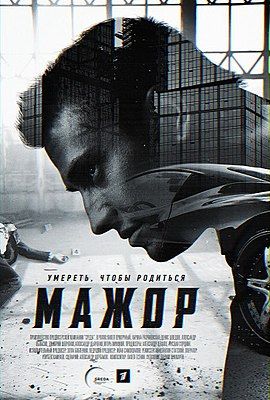
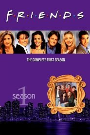
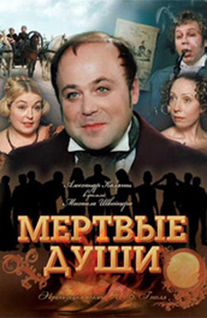
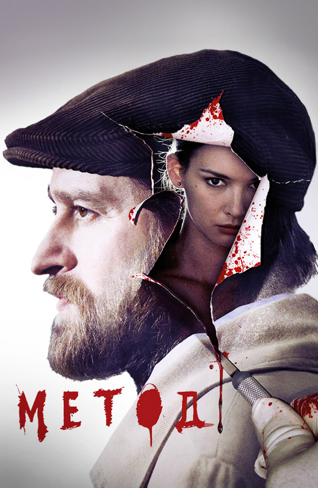
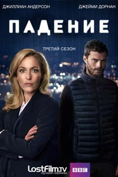
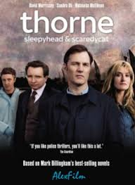

Мажор
«Мажор» — российский остросюжетный детективно-криминальный телесериал с Павлом Прилучным в главной роли
ТрейлерДрузья
«Друзья́» — американский комедийный телесериал, повествующий о жизни шестерых друзей. Признан одним из лучших комедийных сериалов в истории американского телевидения и стал одним из наиболее знаменитых проектов 1990-х годов.
ТрейлерМёртвые души
«Мёртвые души» — советский пятисерийный художественный фильм 1984 года, снятый режиссёром Михаилом Швейцером по первому тому одноимённой поэмы Николая Васильевича Гоголя. Натурные съёмки проходили в Суздале. Телевизионная премьера состоялась 19—24 ноября 1984 года по Первой программе Центрального телевидения
ТрейлерМетод
«Ме́тод» — российский телесериал в жанре детективно-психологического триллера. Главные роли исполняют Константин Хабенский и Паулина Андреева.
ТрейлерКрах
«Крах» — британско-ирландский криминальный телевизионный сериал, снятый режиссёром Алланом Кабиттом, спродюсированный Artists Studio. Сериал был впервые показан на телеканале RTÉ One 13 мая 2013 года в Ирландии и на канале BBC Two в Великобритании 13 мая 2013 года.
ТрейлерТорн
Переведено с английского языка.-Торн - это британская телевизионная криминальная драма, основанная на романах автора Марка Биллингема, которая впервые выйдет в эфир на Первом канале 10 октября 2010 года. Сериал из шести эпизодов с Дэвидом Морриссом в главной роли детективного инспектора Тома Торна. с 21:00 по воскресеньям до 14 ноября.
Трейлер